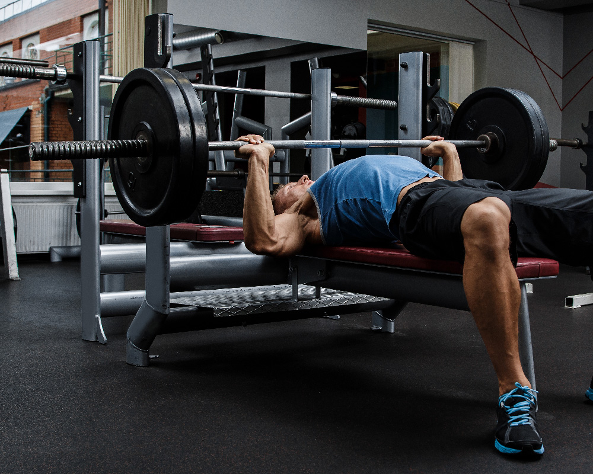
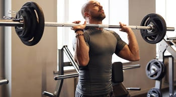

Wat is krachttraining?
Krachttraining is training met weerstand om op deze manier kracht te vergroten die kan worden uitgeoefend op fysieke objecten. Voor krachtsporters is krachttraining het belangrijkste element van hun training. Bij bodybuilders en gewichtheffers is het doel vaker gericht op spiermassa opbouwen. Het combineren van krachttoename en spiergroei is een populaire richting voor vele. Deze groep wordt ook wel ‘powerbuilders’ genoemd. Krachttraining/powerlifting is een competatieve sport die valt onder de KNFK. In wedstrijdverband wordt er gestreden in drie onderdelen: de benchpress, dealdift, squat. Bij elke oefening krijg je drie beurten, waarbij het beste gewicht uiteindelijk wordt meegenomen in je puntentotaal.
5 krachttraining oefeningen
- Bench Press
- Deadlift
- Squat
- Chin ups
- Military press
Bench press
Bench press is een oefening voora gericht op je borstspier, maar met deze oefening pak je tegelijkertijd ook een beetje triceps.
Deadlift
Deadlift is een oefening gericht op je beenspieren en de onderspieren in je rug. Bij de deadlift oefening is het belangrijk dat je je rug zo recht mogelijk houdt, en je vooral de kracht vanuit je benen haalt.

Squat
De Squat is een oefening die gericht is op het trainen van je benen en je billen. Het is ook een compound oefening, wat betekent dat je meerdere spiergroepen tegelijk aanspreekt, dit zijn goeie oefeningen om er voor te zorgen dat je spieren ook nog lening blijven.

Chin ups
De chin-up is een van de meest effectieve maar ook uitdagende bewegingen voor het bovenlichaam, maar het is zeker de moeite waard om toe te voegen aan je training. De chin-up kan worden uitgevoerd met alleen lichaamsgewicht. Vanuit een hangende positie met je handen in een neutrale of gesupineerde greep, trek je jezelf gewoon omhoog richting de stang totdat je kin eroverheen gaat, en laat je jezelf dan weer zakken

Military press
De military press, ook wel de overhead press genoemd, wordt gezien als dé nummer één oefening voor de schouderspieren. Het is een erg effectieve oefening, maar wel een vrij lastige voor beginners. Maar ook genoeg gevorderde krachtsporters hebben nog altijd moeite met de juiste uitvoering van de military press.
